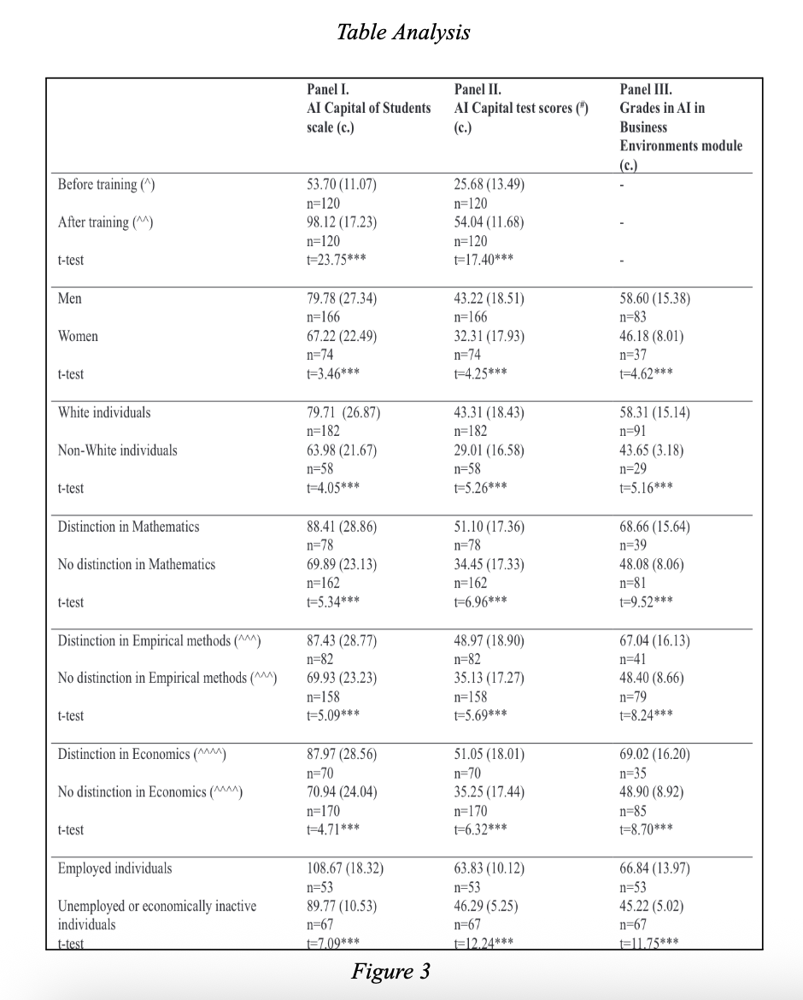
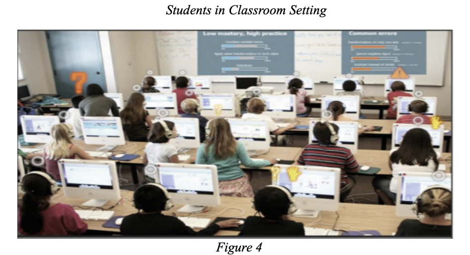

Similarly, the table in Figure 3 provides detailed empirical evidence of how AI training directly shapes students’ AI capital and related academic outcomes. Across multiple demographic groups and academic distinctions, the data consistently show substantial increases in AI capital after the 12-week instructional period, with t-tests indicating statistically significant improvements. For example, both men and women demonstrated notable gains in AI capital scores, and students with distinctions in mathematics, empirical methods, or economics outperformed their peers across all three panels. The table also highlights broader equity and employment implications: White and non-White students each showed significant advancement, and employed students exhibited particularly high AI capital scores and AI test performance. Overall, the table reinforces Drydakis’s central claim that structured AI education produces measurable, widespread gains in AI literacy, academic achievement, and workforce readiness across diverse student populations.
In the body of knowledge regarding AI, many studies have tested specific AI tools designed to enhance learning. Researchers Wu and Yu's meta-analysis in the British Journal of Educational Technology entailed various experiments using AI chatbots across disciplines. They found that “AI chatbots had a big influence on student learning outcomes”, especially in higher education (Wu and Yu, 2024). In addition to this, “short interventions were found to have a stronger effect … than long interventions” (Wu and Yu, 2024). This suggests that focused and clear-cut AI activities may be more beneficial than extensive and unstructured exposure and usage of AI. The findings therefore support the notion that AI should assist and improve instruction strategically as opposed to replacing it entirely.

Similarly, researchers Holstein, McLaren, and Aleven examined Intelligent Tutoring Systems (ITSs) and a mixed-reality teacher awareness tool, Lumilo, across 18 classrooms. A 3 condition experiment—teachers having full access, no access, or limited access to Lumilo—was held with 286 students, 18 classrooms, and 8 teachers. Their experiment demonstrated that when teachers had access to real-time analytics through Lumilo, students' learning gains significantly improved. As the authors explain, “real-time teacher/AI co-orchestration, supported by analytics from an ITS, [enhanced] student learning compared with business-as-usual classrooms” (Holstein, McLaren, and Aleven, 2018). This evidence shows that AI's greatest benefits arise when used in collaboration with human guidance, analytics, and insight.